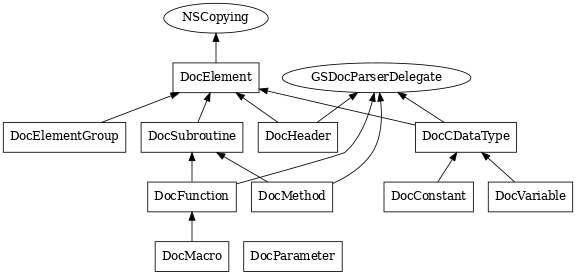
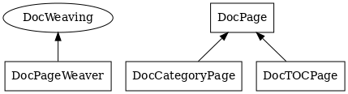
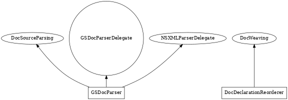
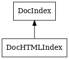
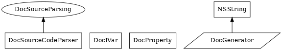
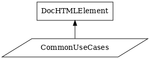
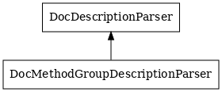
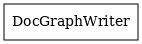
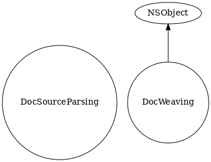

API Overview
Doc Element Tree
- DocElement
Base class to represent element in a doc element tree.
DocElement is an abstract class, whose subclasses represents concrete nodes such as methods, constants, etc. in the documentation element tree.
Each DocElement subclass is expected to implement both the GSDoc parsing and HTML generation that pertains to the element type.
Any ETDoc markup parsing should be delegated to DocDescriptionParser, see -addInformationFrom: .
The doc element tree is rooted in a page. See DocPage.
- DocFunction
Functions in the doc element tree.
A DocFunction object represents a function in the documentation element tree.
- DocCDataType
C data types in the doc element tree.
DocCDataType objects are used to represent various C data types:
- structure
- function pointer
Enum and union are represented with DocConstant -weaveSelector .
- DocParameter
Parameters in the doc element tree.
A DocParameter object can be used to represent both method argument, and function or macro parameter in the documentation element tree.
This class is used by DocSubroutine class and subclasses such DocMethod, DocFunction and DocMacro.
DocParameter can extract class, protocol names, and some type modifiers used in prefix or suffix position. See -parseType: which documents the type parsing support.
- DocHeader
Documentation page header or subheader.
Description forthcoming.
- DocElementGroup
Base class to represent related element constructs in a doc element tree.
DocElementGroup can be used to represent arbitrary element grouping in a page layout.
Alternatively subclasses can be created to represent concrete language constructs such as a class, a category etc.
- DocSubroutine
Base class to represent function-like constructs in a doc element tree.
DocSubroutine is an abstract class whose subclasses represent function-like constructs suchs methods, C functions or macros.
- DocConstant
C constant-like types in the doc element tree.
DocConstant objects are used to represent various constant-like C data types:
- const variable or pointer
- enum
- union
- DocVariable
Global variables in the doc element tree.
DocVariable objects are used to represent global variables not declared as constants (in that DocConstant would be used).
Page Generation
- DocPageWeaver
A documentation builder that produce pages based on the input content.
DocPageWeaver is DocGenerator core class that controls the documentation generation process.
etdocgen tool creates a new page weaver based on the options and arguments the user provides on the command-line, then triggers the page generation with -weaveAllPages which in turn returns the final pages. See DocPage API to understand how these pages can be turned into HTML.You initialize a new page weaver with various input documentation source files and an optional template file. Based on the source file types, DocPageWeaver looks up a parser. When no parser is available, it hands the file content directly to a new documentation page (see DocPage that provides a template-based substitution mechanism). Otherwise it delegates the source file parsing to the right parser e.g. GSDocParser, which will instantiate new doc elements and weave them through the DocWeaving protocol as the parsing goes.
DocPageWeaver is free to weave multiple pages from a single source file, or gather doc elements and consolidate them onto a common page.
So in addition to act as coordinator in the doc generation process, DocPageWeaver implements a strategy to organize the doc elements into a book-like structure.By invoking -weaveNewPage based on some precise criterias (e.g. -weaveClassNamed:superclassName: was called), DocPageWeaver defines page generation rules which correspond to a precise book-like structure.
The doc element arrangement on each weaved page is delegated to DocPage class and subclasses.Subclassing altough experimental and untested, can be used to customize the existing page generation strategy or implement a new one.
- DocCategoryPage
DocCategoryPage represents a page where all the categories on the same class are regrouped.
Description forthcoming.
- DocTOCPage
DocTOCPage represents a Table Of Contents page.
Description forthcoming.
- DocPage
DocPage represents a documentation page.
A documentation page that weaves various HTML, GSDoc, Markdown, plist, and ObjC files (usually provided on the command-line), into a new HTML representation based on the template tags embedded in the HTML or Markdown content.
You usually don't instantiate this class, but give the documentation input files to DocPageWeaver which will create new DocPage instances and return them.
The returned pages can then be written to disk with -writeToURL: or their HTML representation retrieved with -HTMLString .Subclasses can be written to customize the presentation and how the various elements (methods, macros, menu etc.) are laid out. Subclassing support is experimental and untested.
GSDoc Parsing
- GSDocParser
GSDoc parser that can drive a DocPageWeaver through DocWeaving protocol.
Main GSDoc parser which wraps a NSXMLParser internally, handles the basic XML parsing and preprocessing, but delegates the rest to DocElement objects instantiated based on the class returned by -elementClassForName: .
For example <method> is delegated to DocMethod through GSDocParserDelegate methods.The parsing state is managed as a delegate parser stack that contains the receiver itself and zero or more DocElement objects pushed on top.
To parse a GDoc document, you have to initialize a new GSDocParser, use -setWeaver: to set the object which handles the parsing ouput such DocDeclarationReorderer or DocPageWeaver, and triggers the parsing with -parseAndWeave .
All XML parsing related methods are used internally, you can ignore them.
- DocDeclarationReorderer
A DocPageWeaver decorator which can be used to reorder GSDoc symbols declarations, in order to match the source header.
DocPageWeaver uses this class internally.
- <GSDocParserDelegate>
GSDoc parser that can drive a DocPageWeaver through DocWeaving protocol.
@abstract None
Parsing protocol usually implemented by DocElement subclass, so the parsing can be delegated per major XML elements (e.g. class, method etc.) to a newly instantied doc element and initialize it in this way.
Link Generation
- DocHTMLIndex
A documentation index that can be used to create links.
Description forthcoming.
- DocIndex
A documentation index that can be used to create links.
DocIndex represents an autgsdoc-compatible documentation index.
It must be initialized with the igsdoc file corresponding to the gsdoc sources passed to the DocPageWeaver instance in use.
Concrete subclasses such DocHTMLIndex can be used to create links. For example, DocHTMLIndex can be used in -[DocElement HTMLRepresentation] code to wrap every symbol name in a HTML link.
Misc
- DocSourceCodeParser
Description forthcoming.
- DocIVar
Description forthcoming.
- DocProperty
Description forthcoming.
- NSString (DocGenerator)
None
Description forthcoming.
HTML Support
- DocHTMLElement
HTML element class to output HTML in a concise way.
DocHTMLElement is a Seaside-inspired class that provides a DSL to write compact HTML generation code.
DocHTMLElement comes with null-like element that doesn't emit the element markup when evaluated. See +blankElement .
TODO: DocHTMLElement DSL should be more clean and formalized. For example, -and: , -with: and -add: are the same, but it isn't entirely clear-cut when one should be preferred to the others.
For now, a single -with: should be used per message chains. Any subsequent concatenation messages should use -and: . e.g. -with:and:and: is valid but -with:with:and: is not.
The obscure point is what to do when we send a single concatenation message. Should we recommend -with: , -and: or -add:? Should we take in account the type of the concatened content such DocHTMLElement or NSString, then make a distinction between -add: and -addText:.
Is DocHTMLElement DSL really needed or the right answer to what we need?
- DocHTMLElement (CommonUseCases)
HTML element class to output HTML in a concise way.
Category on DocHTMLElement to prevent compiler warning since DocHTMLElement has no fixed API but support a large number of message chaining variations.
ETDoc Parsing
- DocDescriptionParser
ETDoc markup parser.
Parser to extract ETDoc markup located in method, function and macro descriptions.
- DocMethodGroupDescriptionParser
ETDoc markup parser.
Parser to extract ETDoc markup located in class, protocol or category descriptions.
Model and Metamodel
- DocGraphWriter
Abstract base class used by Model Description core classes.
Also implements NestedElement and NamedElement protocols that exist in FAME/EMOF.
FAME Teminology Change Summary
Those changes were made to further simplify the FAME terminology which can get obscure since it overlaps with the host language object model, prevent any conflict with existing GNUstep/Cocoa API and reuse GNUstep/Cocoa naming habits.
We list the FAME term first, then its equivalent name in EtoileFoundation:
- FM3.Element
- ETModelElementDescription
- FM3.Class
- ETEntityDescription
- FM3.Property
- ETPropertyDescription
- FM3.RuntimeElement
- ETAdaptiveModelObject
- attributes (in Class)
- propertyDescriptions (in ETEntityDescription)
- allAttributes (in Class)
- allPropertyDescriptions (in ETEntityDescription)
- superclass (in Class)
- parent (in ETEntityDescription)
- class (in Property)
- owner (in ETPropertyDescription)
For the last point class vs owner, we can consider they have been merged into a single property in EtoileFoundation since they were redundant.
Additions to FAME
itemIdentifier has been added as a mean to get precise control over the UI generation with EtoileUI.
Removals to FAME/EMOF
NamedElement and NestedElement protocols don't exist explicitly.
Weaving and Parsing
- <DocSourceParsing>
A weaver such as DocPageWeaver controls a documentation source parser through this protocol.
Any documentation source parser must implement this protocol to let the weaver initiates the parsing. In addition, the parser must reports its parsing result to the weaver through the DocWeaving protocol.
Parsing usually involves to build new DocElement subclass instances and hand them to the weaver.
- <DocWeaving>
A documentation source parser reports parsing result to a weaver through this protocol.
Any weaver must implement this protocol.
When required, multiple weavers can be chained. For instance, parsing GSDoc documents requires to reorder the parsed declarations with DocDeclarationReorder before handing them to DocPageWeaver. Hence the weaver set on GSDocParser is then a DocDeclarationReorderer instance rather than a DocPageWeaver one.Each time a documentation source document (e.g. a gsdoc file) has been parsed, the parser must invoke -finishWeaving .
New page creation is entirely up to the weaver e.g. in reaction to a DocWeaving method called back by the parser.